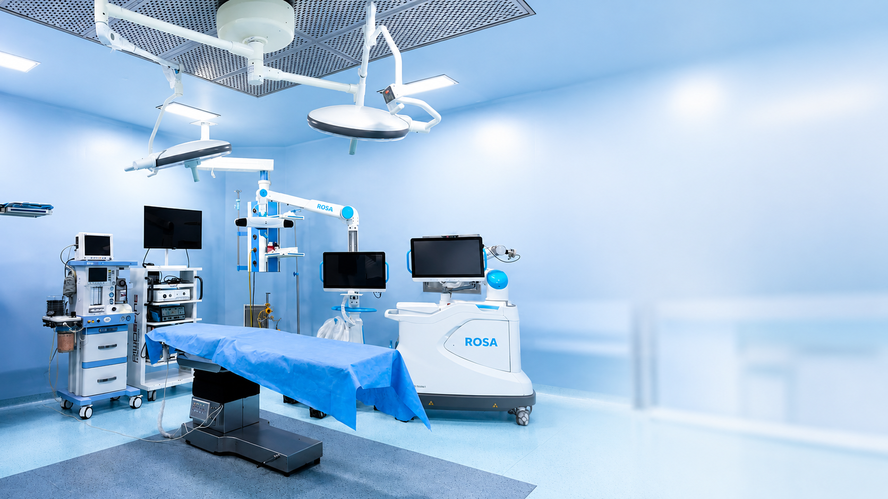
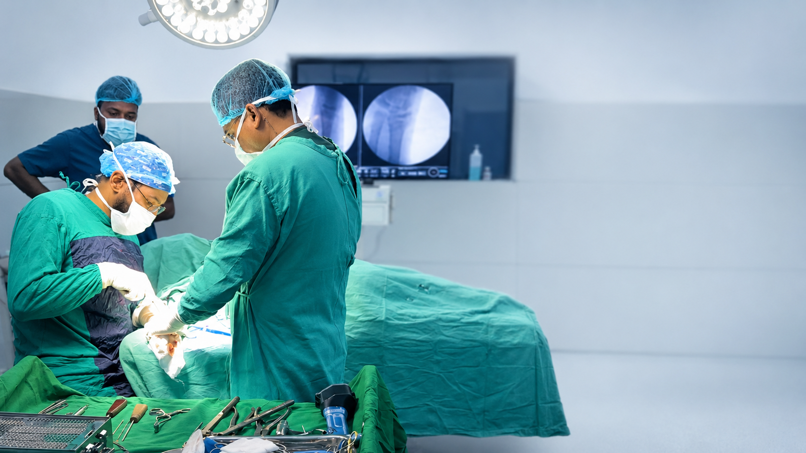
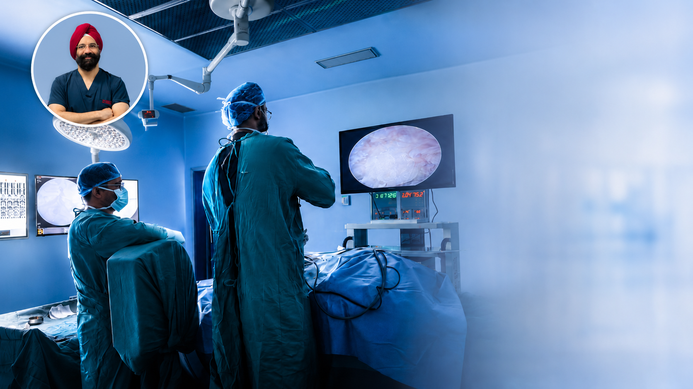
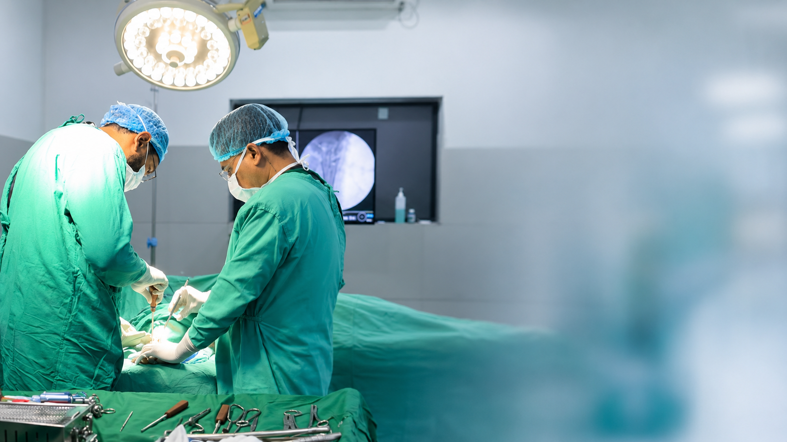
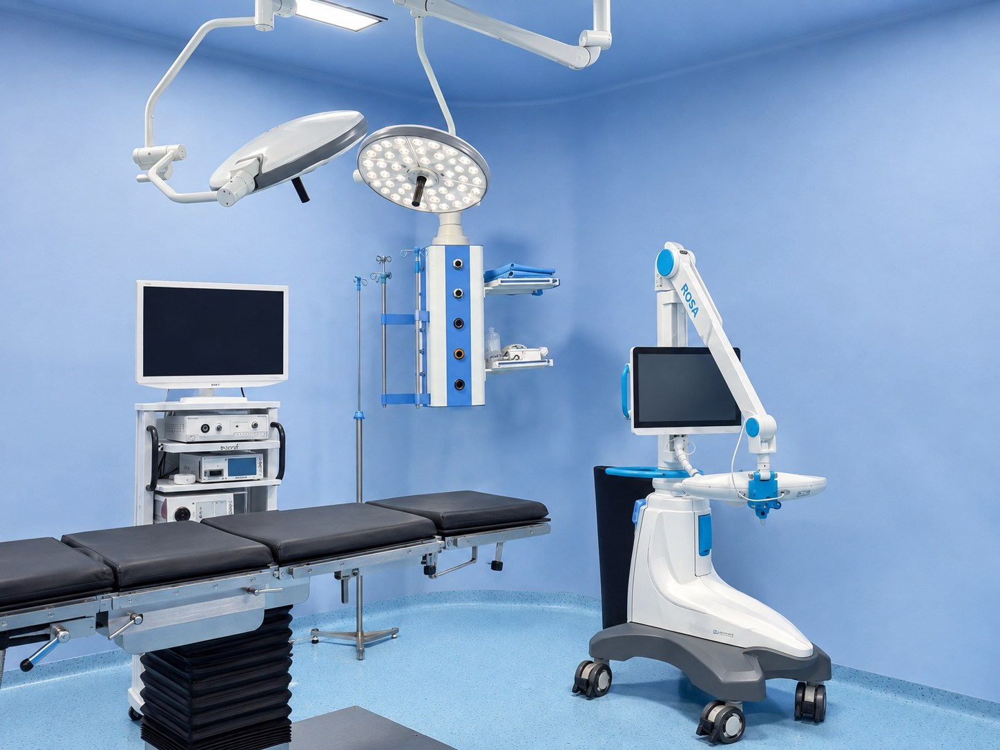

Why Dr. Aman Singh?
Orthopaedic surgeon focused on joint replacement, robotic-assisted knee surgery, arthroscopy, spine and trauma care, with credentials displayed transparently on his profile.
Joint Replacement & Robotic-Assisted Knee Surgery.
Specialist-led orthopaedic care with advanced technology, clear treatment planning and structured rehabilitation at JAP Hospital, Bhogpur.

*Verify exact figures, methodology and time period before publication.

ROSA® Robotic Knee TechnologyROSA® robotic assistance can support detailed planning, alignment assessment and precise execution of a surgeon-led knee replacement plan. The technology supports Dr. Aman Singh; it does not replace clinical judgement.
Clear answers matter when you are comparing a surgeon, hospital, technology, rehabilitation and treatment estimate.
Orthopaedic surgeon focused on joint replacement, robotic-assisted knee surgery, arthroscopy, spine and trauma care, with credentials displayed transparently on his profile.
ROSA® technology adds planning and navigation support while the surgeon remains fully in control of the operation and clinical decisions.
Implant selection should be based on diagnosis, anatomy, bone quality and surgical planning. Ask the team for the currently available implant systems and why one is recommended for you.
Your expected stay is discussed before surgery and depends on your health, procedure and early recovery rather than a one-size-fits-all promise.
Assisted mobilisation is planned by the surgeon and physiotherapy team. The exact timing, walking aid and weight-bearing plan are individualised.
Physiotherapy focuses on safe mobilisation, range of motion, strength, gait and progressive return to daily activity according to your recovery.
A personalised estimate can clarify the planned procedure, implant option, room category, investigations and other expected hospital components before admission.
Your care is coordinated through the orthopaedic, nursing and physiotherapy teams, with escalation to appropriate medical support if a complication or concern arises.
The right estimate depends on the type of knee replacement, implant selection, medical needs, room category and individual treatment plan. Speak with the team for a clear pre-admission estimate rather than relying on a generic online price.
Final charges depend on clinical assessment and the confirmed treatment plan.
Patients can review Dr. Aman Singh's qualifications, clinical focus, OPD timings and treatment areas before booking a consultation.
The homepage stays focused; detailed information lives on dedicated treatment pages.

Total & partial knee replacement assessment.
→
Evaluation for painful hip arthritis and joint damage.
→
Disc, nerve compression and degenerative spine conditions.
→
Keyhole joint procedures and sports injury care.
→
Prompt orthopaedic assessment for injuries.
→
Structured rehabilitation and recovery support.
→Use your existing patient photographs and videos to show real treatment journeys.

Knee replacement patient story · Watch video

Spine care patient story · Watch video

Joint treatment patient story · Watch video
Understand symptoms and goals.
Assessment and investigations.
Discuss suitable options.
When clinically indicated.
Structured recovery support.
Review progress and next steps.


JAP Hospital provides empanelled support for eligible ECHS beneficiaries, subject to applicable referral, authorisation and documentation requirements.
JAP Hospital is on the Jalandhar–Pathankot Highway in Bhogpur, serving patients from Jalandhar, Hoshiarpur, Adampur and surrounding Doaba areas.

G.T. Road, Jalandhar–Pathankot Highway, Dalli, Bhogpur, Punjab 144201.
Discuss your knee pain, joint-replacement options, robotic surgery or a personalised treatment estimate.